Aula 01 — Introdução, Git e HTML5¶
Disciplina: Programação para Internet (ILP951) Professor: Ronan Adriel Zenatti · ronan.zenatti@cps.sp.gov.br Fatec Jahu — 2º Semestre/2026 Pré-requisitos: Nenhum — esta é a aula zero, o ponto de partida absoluto.
🗺️ O que você vai aprender nesta aula¶
Nesta primeira aula você vai configurar todo o ambiente de desenvolvimento que usaremos durante o semestre inteiro. Ao final, você terá instalado Python, criado a pasta do projeto, configurado um ambiente virtual, feito seu primeiro commit no GitHub e escrito um arquivo HTML5 válido. Parece muito, mas cada passo é simples quando feito um de cada vez — e é exatamente assim que vamos fazer.
🎯 Objetivos da Aula¶
Ao final desta aula você deverá ser capaz de:
- Instalar e configurar o ambiente de desenvolvimento do semestre (Python, VS Code e extensões essenciais)
- Criar a estrutura de pastas de um projeto e isolar suas dependências com um ambiente virtual (
venv) - Versionar um projeto com Git e publicá-lo em um repositório remoto no GitHub
- Escrever documentos HTML5 válidos, aplicando a estrutura obrigatória e as tags fundamentais (parágrafos, títulos, links, listas, tabelas, imagens e formulários)
🗺️ Mapa Mental da Aula¶
flowchart LR
ROOT(("Aula 01<br/>Ambiente e Fundamentos"))
ROOT --> AMB
subgraph AMB["🐍 Ambiente de Desenvolvimento"]
direction TB
AMB1["Python (interpretador)"]
AMB2["VS Code + extensões"]
end
ROOT --> PROJ
subgraph PROJ["📁 Estrutura do Projeto"]
direction TB
PROJ1["Pasta do projeto"]
PROJ2["venv (ambiente virtual)"]
end
ROOT --> GIT
subgraph GIT["🔧 Versionamento"]
direction TB
GIT1["Git (local)"]
GIT2["GitHub (nuvem)"]
GIT3[".gitignore"]
end
ROOT --> HTML
subgraph HTML["🌐 HTML5"]
direction TB
HTML1["Estrutura obrigatória"]
HTML2["Tags: p, h1-h6, a, ul/li"]
HTML3["Tabelas e formulários"]
endParte 1 — Entendendo o que vamos construir¶
Antes de instalar qualquer coisa, vale a pena ter uma imagem clara do que é uma aplicação web e quais peças a compõem. Isso vai ajudar você a entender por que cada ferramenta existe e qual papel ela desempenha no conjunto.
O que é uma aplicação web?¶
Quando você abre o Google no navegador e digita uma pesquisa, uma sequência de eventos acontece: o navegador envia uma pergunta para um computador que está em algum servidor no mundo, esse computador processa a pergunta, busca as respostas em um banco de dados e devolve uma página HTML para o seu navegador mostrar na tela.
Nessa história existem três personagens principais. O front-end é tudo que você vê e clica — os botões, as cores, o texto, o layout. Ele vive no seu navegador e é feito de HTML, CSS e JavaScript. O back-end é o "cérebro" da aplicação — o código que roda no servidor, processa as informações, valida os dados e decide o que mostrar. É aqui que entra o Python com Flask. O banco de dados é onde as informações são guardadas de forma permanente — usuários cadastrados, produtos, pedidos, tudo fica salvo aqui.
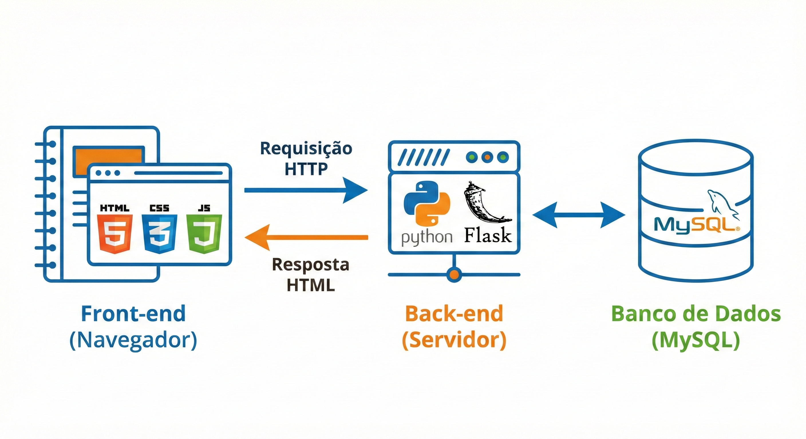
Nesta disciplina você vai aprender a construir as três camadas. Nesta primeira aula, vamos montar a estrutura base e entender o HTML — a fundação de tudo que aparece na tela.
Por que Python?¶
Python é atualmente uma das linguagens de programação mais usadas no mundo, tanto em empresas iniciantes quanto em gigantes como Google, Netflix e Instagram. Ela foi escolhida para esta disciplina por três razões concretas: sua sintaxe é muito próxima da linguagem humana (você vai conseguir ler o código e entender o que ele faz antes mesmo de aprender as regras formais), ela tem uma biblioteca chamada Flask que simplifica a criação de aplicações web, e ela é a mesma linguagem usada em áreas de grande crescimento como Inteligência Artificial e Ciência de Dados — o que você aprende aqui abre portas bem além desta disciplina.
Parte 2 — Instalando o Python¶
O que é um interpretador e por que precisamos instalá-lo?¶
Uma linguagem de programação como Python é, em essência, um conjunto de regras e palavras que os humanos podem escrever e entender. O problema é que o computador não entende Python — ele só entende sequências de zeros e uns. O interpretador Python é o programa responsável por traduzir o que você escreve em Python para instruções que o processador consegue executar. Instalar o Python significa instalar esse tradutor no seu computador.
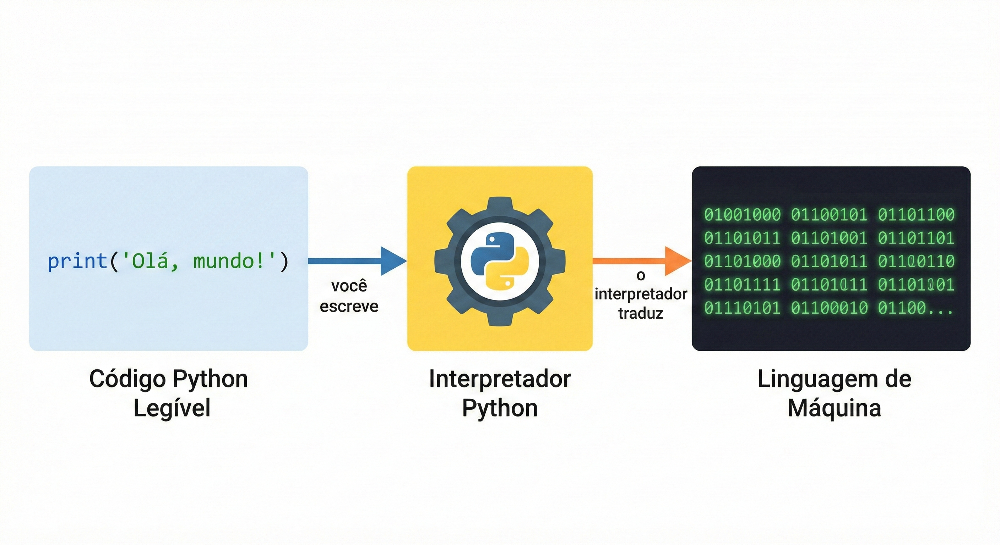
Instalação no Windows¶
Acesse o site oficial em python.org e clique em "Download Python 3.x.x" (a versão mais recente da série 3). Baixe o instalador .exe e execute-o.
Atenção crucial: Na primeira tela do instalador, antes de clicar em qualquer botão, você verá uma caixa de seleção no rodapé com o texto "Add Python to PATH". Marque essa opção. Se você não marcar ela agora, o Windows não vai saber onde encontrar o Python quando você digitar comandos no terminal, e você terá que configurar manualmente mais tarde. Após marcar, clique em "Install Now".
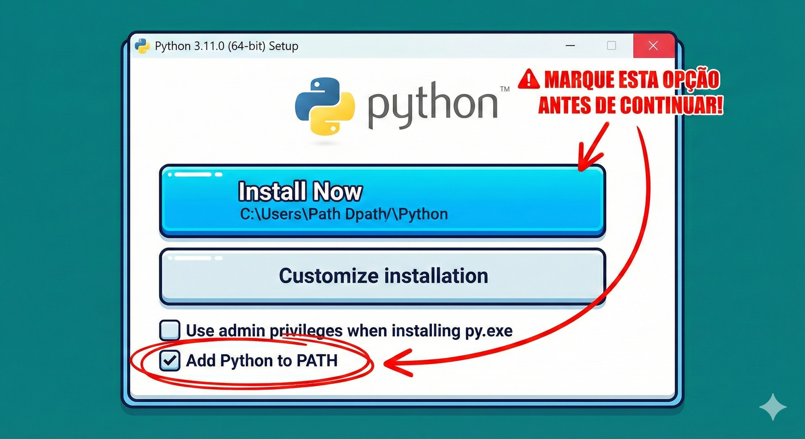
Verificando se a instalação funcionou¶
Após a instalação, abra o Prompt de Comando (pressione Windows + R, digite cmd e pressione Enter). Digite o seguinte e pressione Enter:
python --version
Se a instalação funcionou corretamente, você verá algo como Python 3.12.0. Isso confirma que o interpretador está instalado e o Windows consegue encontrá-lo.
💡 Por que testamos no terminal? Ao longo do semestre, você vai usar o terminal com frequência. Cada comando será explicado quando aparecer pela primeira vez — não se preocupe com o que ainda não foi apresentado.
Parte 3 — Instalando o Visual Studio Code¶
O VS Code é o editor de código que usaremos. Você poderia escrever código Python em qualquer editor de texto, até no bloco de notas, mas um editor especializado oferece recursos que aceleram muito o trabalho: coloração sintática (cada tipo de elemento fica com uma cor diferente, facilitando a leitura), autocompletar (o editor sugere o resto do que você está digitando) e integração direta com o terminal.
Acesse code.visualstudio.com e baixe a versão para Windows. A instalação é padrão — avance as telas com as opções padrão.
Extensões essenciais¶
Após instalar o VS Code, você precisa adicionar duas extensões. Clique no ícone de blocos no painel lateral esquerdo (ou pressione Ctrl + Shift + X) para abrir o marketplace de extensões. Busque e instale a extensão Python (publicada pela Microsoft) e a extensão Prettier - Code formatter.
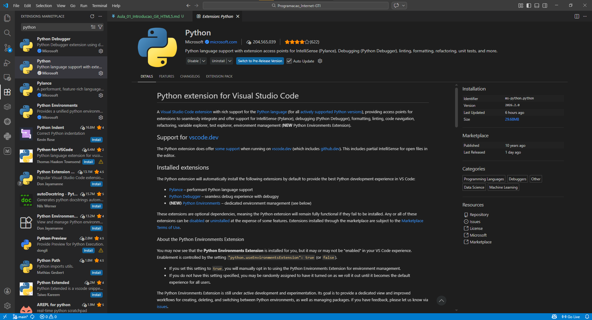
Parte 4 — Criando a pasta do projeto¶
Por que a organização de pastas importa?¶
Imagine uma gaveta onde você joga tudo junto: documentos, ferramentas, roupas e comida. Encontrar qualquer coisa seria um pesadelo. Um projeto de software é igual — se os arquivos não estiverem organizados de forma lógica, o projeto vira um caos rapidamente. A estrutura de pastas que vamos criar segue um padrão que você encontrará em projetos Flask reais no mercado de trabalho.
Criando a pasta via terminal¶
Abra o terminal e navegue até onde você quer criar o projeto. Para criar na área de trabalho:
cd Desktop
mkdir projeto-web
cd projeto-web
O comando mkdir cria uma pasta (de "make directory"). O comando cd navega para dentro de uma pasta (de "change directory"). Agora abra o VS Code diretamente nesta pasta:
code .
O ponto (.) significa "aqui" — ou seja, "abra o VS Code na pasta em que estou agora".
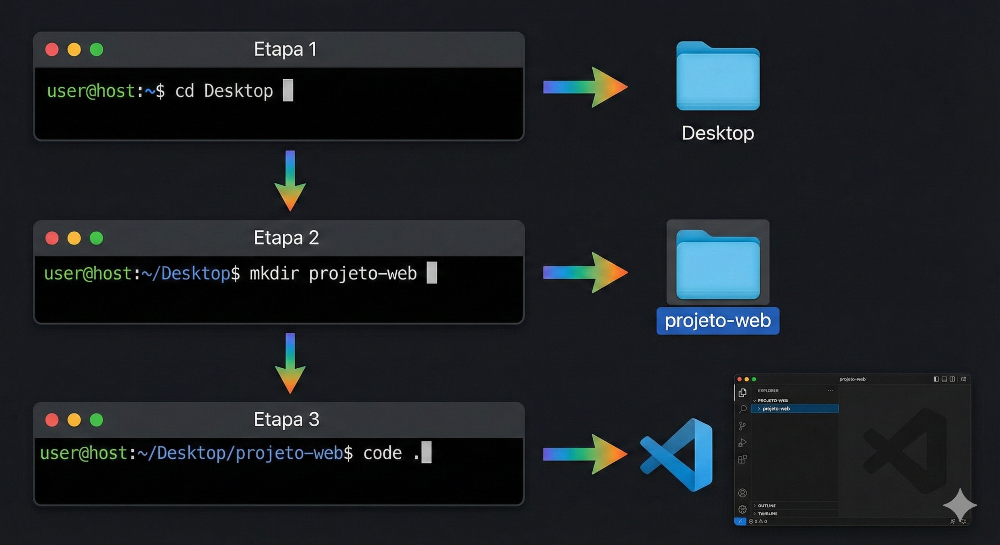
Parte 5 — Ambiente Virtual (venv)¶
O problema que o ambiente virtual resolve¶
Imagine que você está trabalhando em dois projetos diferentes ao mesmo tempo. O Projeto A precisa da versão 1.0 de uma biblioteca chamada Flask. O Projeto B precisa da versão 3.0 da mesma biblioteca, que tem mudanças incompatíveis. Se você instalar as bibliotecas direto no Python global do seu computador, você só pode ter uma versão — e os dois projetos entrarão em conflito.
O ambiente virtual (ou venv, de "virtual environment") resolve isso criando um Python isolado para cada projeto. É como se cada projeto tivesse seu próprio aquário particular: os peixes (bibliotecas) de um aquário não interferem nos peixes do outro, mesmo que vivam no mesmo armário.
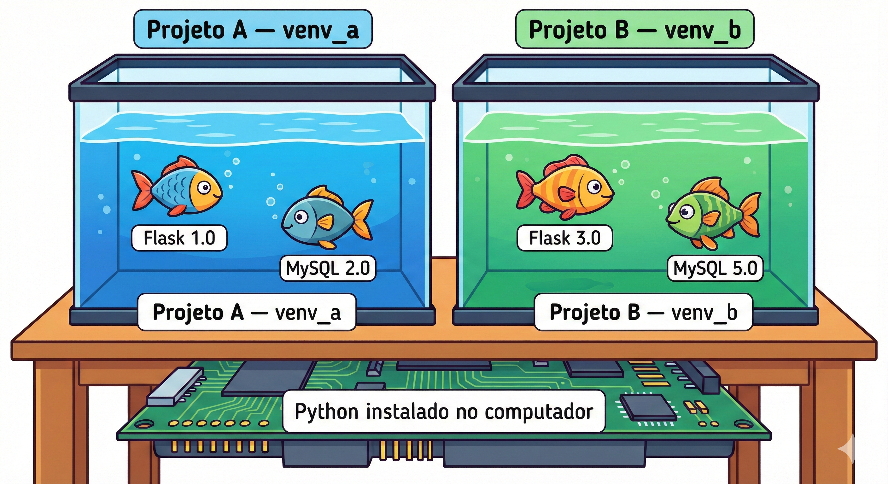
Criando e ativando o ambiente virtual¶
Com o terminal aberto dentro da pasta projeto-web, crie o ambiente virtual com:
python -m venv venv
Você está dizendo ao Python: "execute o módulo venv e crie um ambiente virtual chamado venv aqui dentro." Uma pasta chamada venv aparecerá no projeto. Em seguida, ative-o:
venv\Scripts\activate
Após esse comando, o início da linha do terminal muda, ganhando o prefixo (venv):
(venv) C:\Users\SeuNome\Desktop\projeto-web>
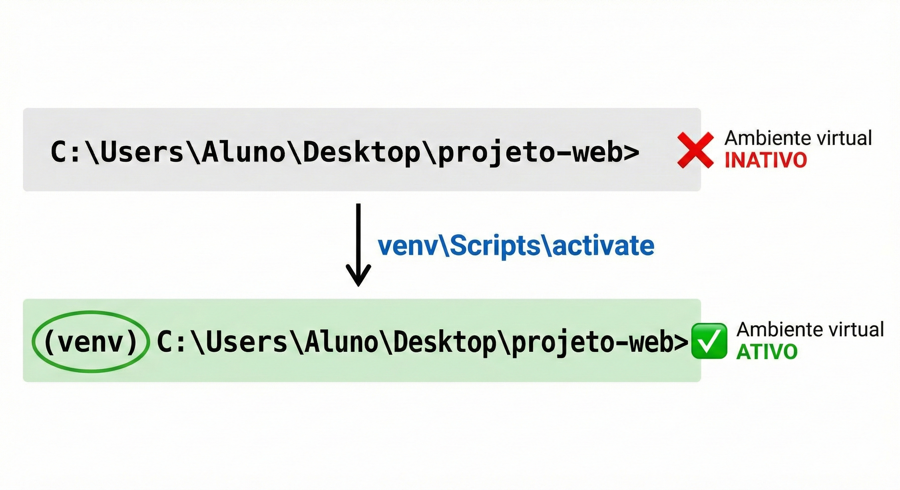
Esse (venv) é o sinal visual de que o ambiente virtual está ativo. Toda biblioteca instalada a partir deste momento vai para dentro da pasta venv, sem tocar no resto do computador.
⚠️ Regra de ouro: Sempre que abrir um novo terminal para trabalhar no projeto, o primeiro comando deve ser ativar o ambiente virtual. Se você esquecer, as bibliotecas não serão encontradas e o projeto não funcionará.
Parte 6 — Git e GitHub¶
O que é versionamento e por que você precisa disso?¶
Imagine que você está escrevendo um trabalho de faculdade em Word. Você salva como trabalho_v1.docx. Faz mudanças: trabalho_v2.docx. Mais mudanças: trabalho_v3_final.docx. Depois: trabalho_v3_final_MESMO.docx. Todo programador que trabalhou sem versionamento já chegou nesse caos — e o Git existe para acabar com ele.
O Git registra cada mudança que você faz no código, com uma descrição do que foi alterado, quando e por quem. Você pode voltar para qualquer ponto da história do projeto com um único comando. Mais do que isso: ele permite que múltiplas pessoas trabalhem no mesmo projeto ao mesmo tempo sem sobrescrever o trabalho umas das outras, o que é fundamental em qualquer ambiente profissional real.
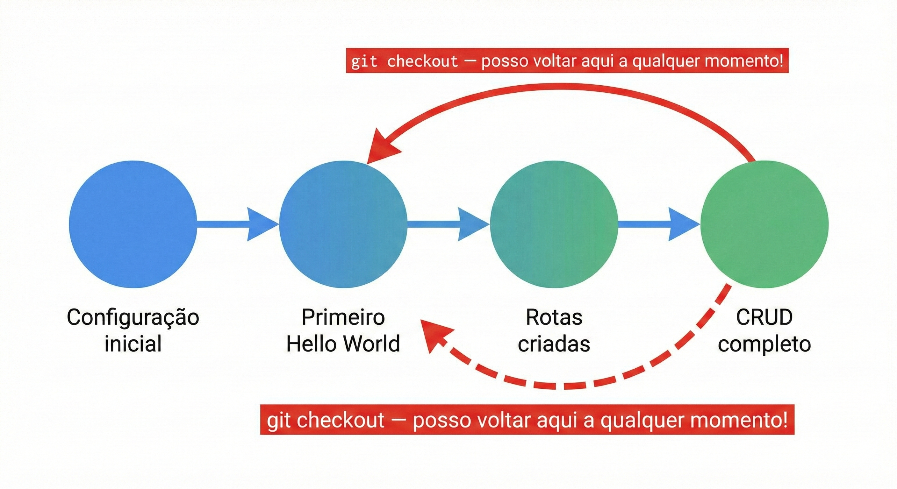
Git vs. GitHub¶
Git é o programa instalado no seu computador que controla o versionamento localmente. GitHub é o serviço online que armazena o histórico do seu projeto na nuvem. O Git é seu diário pessoal; o GitHub é o cofre seguro na nuvem onde você guarda uma cópia.
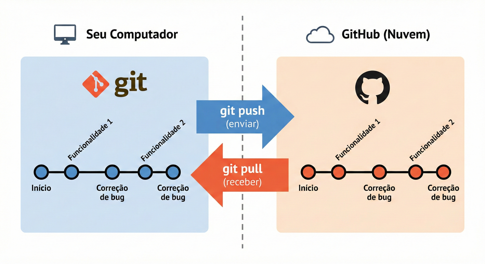
Instalando o Git e configurando¶
Acesse git-scm.com e instale o Git com as opções padrão. Após a instalação, configure sua identidade — esse nome aparecerá em cada registro que você criar:
git config --global user.name "Seu Nome Completo"
git config --global user.email "seu.email@example.com"
O arquivo .gitignore¶
A pasta venv contém milhares de arquivos do Python que nunca devem ser enviados ao GitHub — eles podem ser recriados a qualquer momento. O arquivo .gitignore diz ao Git o que ignorar. Crie-o na raiz do projeto com este conteúdo:
# Ambiente virtual — nunca versionar
venv/
# Arquivos de cache do Python
__pycache__/
*.pyc
# Configurações locais do VS Code
.vscode/
# Variáveis de ambiente sensíveis (senhas, chaves)
.env
O fluxo de trabalho do Git¶
Todo commit passa por três estágios: você edita arquivos no seu projeto, adiciona as mudanças ao "stage" (uma área de preparação onde você escolhe o que vai entrar no commit), e então confirma o commit com uma mensagem descritiva.
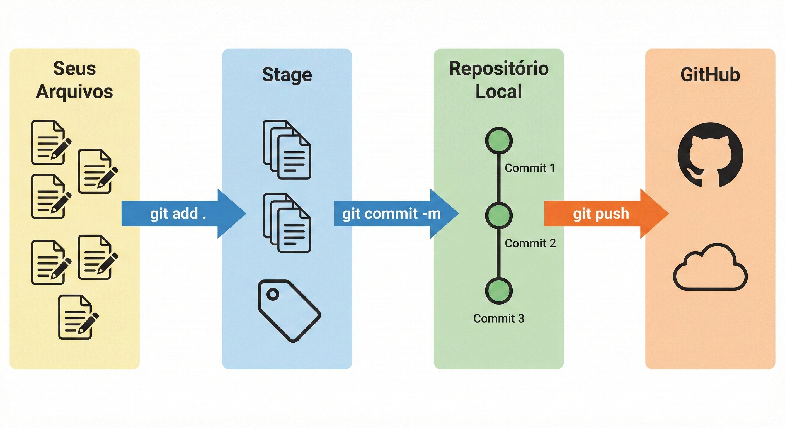
git init
git add .
git commit -m "Aula 01: configuração inicial do projeto"
Depois de criar o repositório no GitHub (em github.com, clique em "New repository"), conecte e envie:
git remote add origin https://github.com/SEU-USUARIO/projeto-web-fatec.git
git push -u origin main
Acesse o endereço do repositório no navegador e você verá seus arquivos lá. Seu portfólio online acabou de começar.
Parte 7 — HTML5: a linguagem da web¶
O que é HTML e como ele funciona?¶
HTML (HyperText Markup Language) é a linguagem que define a estrutura e o conteúdo de uma página web. Quando o navegador recebe uma página, ele lê o arquivo HTML e decide o que mostrar na tela com base nas marcações que encontra. A palavra "marcação" é essencial aqui: HTML não é uma linguagem de programação — você não cria lógica nem repetições com HTML puro. Você está simplesmente rotulando pedaços de conteúdo para dizer o que eles são: "este é um título", "este é um parágrafo", "este é um link".
Tags: a unidade fundamental do HTML¶
A unidade básica do HTML é a tag — um rótulo entre os sinais < e >. A grande maioria das tags vem em par: uma tag de abertura e uma de fechamento. A de fechamento é idêntica à de abertura, mas com uma barra / antes do nome.
Antes de ver um código completo, veja três exemplos conceituais de tags na prática:
Exemplo conceitual 1 — Parágrafos: A tag <p> marca um bloco de texto como parágrafo. O navegador automaticamente adiciona espaçamento antes e depois. <p>Texto aqui.</p> é suficiente para criar um parágrafo bem formado.
Exemplo conceitual 2 — Títulos hierárquicos: HTML tem seis níveis de título, de <h1> (mais importante, maior) a <h6> (menos importante, menor). O <h1> deve ser o título principal da página e deve existir apenas um por página — assim como um livro tem apenas um título principal.
Exemplo conceitual 3 — Links: A tag <a> (de "anchor", âncora) cria links. O atributo href indica o destino: <a href="https://fatec.sp.gov.br">Visitar FATEC</a>. O texto entre as tags é o texto clicável que o usuário vê.
A estrutura obrigatória de um documento HTML5¶
Todo arquivo HTML5 válido precisa de uma estrutura mínima — o esqueleto que todo documento precisa antes de receber qualquer conteúdo.
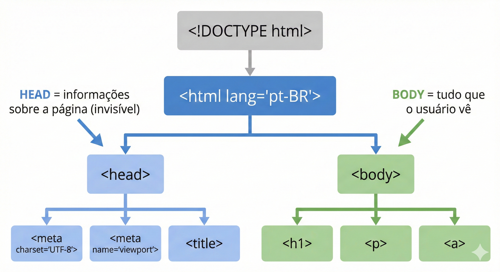
<!DOCTYPE html>
<!-- Declara que este é um documento HTML5. Deve ser sempre a primeira linha. -->
<html lang="pt-BR">
<!-- Envolve todo o documento. lang="pt-BR" informa o idioma para navegadores
e leitores de tela (importante para acessibilidade). -->
<head>
<!-- Contém informações SOBRE o documento — o usuário não vê o que está aqui,
mas o navegador usa para configurar a exibição da página. -->
<meta charset="UTF-8">
<!-- Define a codificação de caracteres. Sem isso, acentos e cedilhas
como ã, é, ç aparecem como símbolos estranhos e ilegíveis. -->
<meta name="viewport" content="width=device-width, initial-scale=1.0">
<!-- Essencial para responsividade: diz ao navegador em celulares
para não reduzir o zoom automaticamente. -->
<title>Minha Primeira Página</title>
<!-- Aparece na aba do navegador e nos resultados de busca do Google.
Não aparece no corpo da página. -->
</head>
<body>
<!-- Contém TUDO que aparece visualmente:
textos, imagens, botões, tabelas, formulários... -->
<h1>Olá, mundo!</h1>
<p>Este é meu primeiro parágrafo em HTML5.</p>
</body>
</html>
Observe a indentação — os espaços no início de cada linha. O navegador ignora esses espaços, mas eles são essenciais para que humanos consigam ler e entender a hierarquia do código. Use sempre 2 espaços para cada nível de aninhamento, e adote esse hábito desde hoje.
Exemplo prático 1 — Página de apresentação pessoal¶
Crie um arquivo chamado pagina_pessoal.html na pasta projeto-web. Em vez de digitar a página inteira de uma vez, vamos construí-la em pequenos passos, salvando e recarregando o navegador a cada trecho novo — assim você vê exatamente o que cada tag adiciona à página.
Passo 1 — o esqueleto e o título principal. Comece com a estrutura obrigatória que você acabou de ver, e adicione um único <h1> dentro do <body>:
<!DOCTYPE html>
<html lang="pt-BR">
<head>
<meta charset="UTF-8">
<meta name="viewport" content="width=device-width, initial-scale=1.0">
<title>Sobre Mim</title>
</head>
<body>
<h1>João Silva</h1>
<!-- h1 = título principal da página: maior, negrito, único por página -->
</body>
</html>
Salve o arquivo, abra-o no navegador (clique duas vezes no explorador de arquivos) e observe: a aba do navegador mostra "Sobre Mim" (o <title>), enquanto o corpo da página mostra "João Silva" em destaque (o <h1>) — são coisas diferentes.
Passo 2 — uma seção "Sobre mim". Logo depois do <h1>, adicione um subtítulo e um parágrafo:
<h2>Sobre mim</h2>
<!-- h2 = subtítulo: menor que h1, usado para organizar seções -->
<p>
Olá! Meu nome é João, tenho 22 anos e estou cursando Gestão da Tecnologia
da Informação na FATEC Jahu. Tenho interesse em desenvolvimento web e
banco de dados.
</p>
<!-- p = parágrafo de texto: o navegador adiciona espaço antes e depois -->
Salve e recarregue a página. Note como o <h2> aparece menor que o <h1>, e como o navegador insere espaçamento automático antes e depois do parágrafo, sem você precisar pedir isso explicitamente.
Passo 3 — a lista de habilidades. Depois do parágrafo, adicione mais uma seção, desta vez com uma lista:
<h2>Minhas habilidades</h2>
<ul>
<!-- ul = "unordered list" = lista com marcadores (bolinhas).
Use quando a ORDEM dos itens não importa. -->
<li>HTML e CSS</li>
<!-- li = "list item" = cada item da lista -->
<li>Python (em aprendizado)</li>
<li>MySQL</li>
<li>Git e GitHub</li>
</ul>
Salve e recarregue novamente. Observe a lista com marcadores (bolinhas) aparecendo — cada <li> virou um item independente, indentado automaticamente pelo navegador.
Passo 4 — a seção de contato. Por fim, adicione uma seção com um link clicável:
<h2>Contato</h2>
<p>
Me encontre no GitHub:
<a href="https://github.com/joaosilva">github.com/joaosilva</a>
<!-- a = link (âncora). href = endereço de destino.
O texto entre as tags é o texto clicável que o usuário vê. -->
</p>
Salve e recarregue uma última vez. Note que o texto do link aparece sublinhado e em azul (o estilo padrão do navegador para links) e que clicar nele abre o endereço do href.
Bloco completo consolidado — depois de passar pelos quatro passos, seu arquivo pagina_pessoal.html deve estar assim:
<!DOCTYPE html>
<html lang="pt-BR">
<head>
<meta charset="UTF-8">
<meta name="viewport" content="width=device-width, initial-scale=1.0">
<title>Sobre Mim</title>
</head>
<body>
<h1>João Silva</h1>
<!-- h1 = título principal da página: maior, negrito, único por página -->
<h2>Sobre mim</h2>
<!-- h2 = subtítulo: menor que h1, usado para organizar seções -->
<p>
Olá! Meu nome é João, tenho 22 anos e estou cursando Gestão da Tecnologia
da Informação na FATEC Jahu. Tenho interesse em desenvolvimento web e
banco de dados.
</p>
<!-- p = parágrafo de texto: o navegador adiciona espaço antes e depois -->
<h2>Minhas habilidades</h2>
<ul>
<!-- ul = "unordered list" = lista com marcadores (bolinhas).
Use quando a ORDEM dos itens não importa. -->
<li>HTML e CSS</li>
<!-- li = "list item" = cada item da lista -->
<li>Python (em aprendizado)</li>
<li>MySQL</li>
<li>Git e GitHub</li>
</ul>
<h2>Contato</h2>
<p>
Me encontre no GitHub:
<a href="https://github.com/joaosilva">github.com/joaosilva</a>
<!-- a = link (âncora). href = endereço de destino.
O texto entre as tags é o texto clicável que o usuário vê. -->
</p>
</body>
</html>
Exemplo prático 2 — Página com tabela de horários¶
Tabelas em HTML organizam dados em linhas e colunas. A estrutura usa quatro tags principais que trabalham juntas. Crie um arquivo chamado horarios.html e, de novo, vamos construí-lo em partes.
Passo 1 — título e cabeçalho da tabela. Comece com o esqueleto, um <h1>, e a linha de cabeçalho da tabela:
<!DOCTYPE html>
<html lang="pt-BR">
<head>
<meta charset="UTF-8">
<meta name="viewport" content="width=device-width, initial-scale=1.0">
<title>Grade de Horários</title>
</head>
<body>
<h1>Grade de Horários — 1º Semestre 2026</h1>
<table border="1">
<!-- table = contêiner da tabela inteira.
border="1" adiciona bordas visíveis para visualizarmos a estrutura.
Nas próximas aulas usaremos Bootstrap para estilizar com elegância. -->
<thead>
<!-- thead = agrupa a linha de cabeçalho: visualmente separada do corpo -->
<tr>
<!-- tr = "table row" = uma linha da tabela (horizontal) -->
<th>Dia</th>
<!-- th = "table header" = célula de cabeçalho: negrito e centralizado -->
<th>Horário</th>
<th>Disciplina</th>
<th>Professor</th>
</tr>
</thead>
</table>
</body>
</html>
Salve e recarregue a página. Você verá apenas a linha de cabeçalho, com as células em negrito e centralizadas — o <thead> ainda não tem nenhuma linha de dados abaixo dele.
Passo 2 — a primeira linha de dados. Dentro da </thead> e antes do </table>, adicione um <tbody> com a primeira linha:
<tbody>
<!-- tbody = agrupa todas as linhas de dados da tabela -->
<tr>
<td>Segunda-feira</td>
<!-- td = "table data" = célula de dado comum -->
<td>19h00 — 20h40</td>
<td>Programação para Internet</td>
<td>Ronan Zenatti</td>
</tr>
</tbody>
Salve e recarregue. Agora aparece uma linha de dados abaixo do cabeçalho — repare que o texto das células <td> não vem em negrito, ao contrário das células <th> do cabeçalho.
Passo 3 — as linhas restantes. Dentro do mesmo <tbody>, logo depois da primeira </tr>, adicione mais duas linhas:
<tr>
<td>Quarta-feira</td>
<td>19h00 — 20h40</td>
<td>Programação para Internet</td>
<td>Ronan Zenatti</td>
</tr>
<tr>
<td>Quinta-feira</td>
<td>19h00 — 20h40</td>
<td>Redes de Computadores</td>
<td>Professor X</td>
</tr>
Salve e recarregue uma última vez. A tabela agora tem três linhas de dados completas, formando a grade de horários inteira.
Bloco completo consolidado — seu arquivo horarios.html final deve estar assim:
<!DOCTYPE html>
<html lang="pt-BR">
<head>
<meta charset="UTF-8">
<meta name="viewport" content="width=device-width, initial-scale=1.0">
<title>Grade de Horários</title>
</head>
<body>
<h1>Grade de Horários — 1º Semestre 2026</h1>
<table border="1">
<!-- table = contêiner da tabela inteira.
border="1" adiciona bordas visíveis para visualizarmos a estrutura.
Nas próximas aulas usaremos Bootstrap para estilizar com elegância. -->
<thead>
<!-- thead = agrupa a linha de cabeçalho: visualmente separada do corpo -->
<tr>
<!-- tr = "table row" = uma linha da tabela (horizontal) -->
<th>Dia</th>
<!-- th = "table header" = célula de cabeçalho: negrito e centralizado -->
<th>Horário</th>
<th>Disciplina</th>
<th>Professor</th>
</tr>
</thead>
<tbody>
<!-- tbody = agrupa todas as linhas de dados da tabela -->
<tr>
<td>Segunda-feira</td>
<!-- td = "table data" = célula de dado comum -->
<td>19h00 — 20h40</td>
<td>Programação para Internet</td>
<td>Ronan Zenatti</td>
</tr>
<tr>
<td>Quarta-feira</td>
<td>19h00 — 20h40</td>
<td>Programação para Internet</td>
<td>Ronan Zenatti</td>
</tr>
<tr>
<td>Quinta-feira</td>
<td>19h00 — 20h40</td>
<td>Redes de Computadores</td>
<td>Professor X</td>
</tr>
</tbody>
</table>
</body>
</html>
Exemplo prático 3 — Página com imagem e formulário¶
Este exemplo introduz <img> e a estrutura básica de um formulário. Os formulários serão estudados em profundidade na Aula 04 — por ora, foque em observar a estrutura e o propósito de cada tag. Crie um arquivo chamado contato.html, novamente em passos.
Passo 1 — título e imagem. Comece com o esqueleto, um <h1> e uma imagem:
<!DOCTYPE html>
<html lang="pt-BR">
<head>
<meta charset="UTF-8">
<meta name="viewport" content="width=device-width, initial-scale=1.0">
<title>Contato</title>
</head>
<body>
<h1>Entre em Contato</h1>
<img src="https://via.placeholder.com/150" alt="Foto de perfil" width="150">
<!-- img = exibe uma imagem.
src = caminho ou URL da imagem (source = fonte).
alt = texto alternativo: aparece se a imagem não carregar e é
lido por leitores de tela. NUNCA omita o alt — é acessibilidade.
Importante: <img> não tem tag de fechamento. É uma "void element" —
elementos que não têm conteúdo entre abertura e fechamento. -->
</body>
</html>
Salve e recarregue a página. A imagem de placeholder aparece com 150 pixels de largura, logo abaixo do título.
Passo 2 — abrindo o formulário com o campo de nome. Depois da imagem, adicione um subtítulo, a abertura do <form> e o primeiro campo:
<h2>Envie uma mensagem</h2>
<form>
<!-- form = formulário. Agrupa campos de entrada de dados.
Voltaremos a ele com muito mais detalhe na Aula 04. -->
<label for="nome">Seu nome:</label>
<!-- label = rótulo descritivo de um campo.
O atributo "for" deve ser idêntico ao "id" do input que descreve.
Com isso, clicar no rótulo move o foco para o campo — acessibilidade. -->
<br>
<input type="text" id="nome" name="nome" placeholder="Digite seu nome">
<!-- input = campo de entrada. Não tem tag de fechamento (void element).
type="text" = texto de uma linha.
placeholder = texto de dica que desaparece ao digitar. -->
<br><br>
</form>
Salve e recarregue. Repare que clicar no texto "Seu nome:" move o cursor direto para o campo de digitação — é o efeito do for/id combinados.
Passo 3 — o campo de e-mail. Dentro do <form>, logo depois do campo de nome (antes do </form>), adicione:
<label for="email">Seu e-mail:</label>
<br>
<input type="email" id="email" name="email" placeholder="seu@email.com">
<!-- type="email" = o navegador valida se o formato é de e-mail válido
antes de permitir o envio do formulário. Validação automática! -->
<br><br>
Salve e recarregue. Tente digitar um texto sem "@" nesse campo e clicar fora — dependendo do navegador, você já percebe uma dica visual de que o formato esperado é um e-mail.
Passo 4 — o campo de mensagem. Ainda dentro do <form>, depois do campo de e-mail, adicione:
<label for="mensagem">Mensagem:</label>
<br>
<textarea id="mensagem" name="mensagem" rows="4" cols="40"
placeholder="Escreva aqui..."></textarea>
<!-- textarea = área de texto de múltiplas linhas.
Diferente do input, textarea TEM tag de fechamento.
rows e cols definem o tamanho visual inicial. -->
<br><br>
Salve e recarregue. Note que a <textarea> aparece como uma caixa maior, com várias linhas — diferente do <input type="text">, que é sempre uma única linha.
Passo 5 — o botão de envio. Por fim, feche o formulário com um botão de envio:
<button type="submit">Enviar Mensagem</button>
<!-- button type="submit" = envia o formulário ao servidor.
Ainda não temos back-end para receber os dados (isso vem na Aula 04),
mas a estrutura já está correta. -->
Salve e recarregue pela última vez. O botão "Enviar Mensagem" aparece ao final do formulário — clicar nele ainda não faz nada de útil, porque não existe back-end recebendo esses dados ainda (isso muda na Aula 04).
Bloco completo consolidado — seu arquivo contato.html final deve estar assim:
<!DOCTYPE html>
<html lang="pt-BR">
<head>
<meta charset="UTF-8">
<meta name="viewport" content="width=device-width, initial-scale=1.0">
<title>Contato</title>
</head>
<body>
<h1>Entre em Contato</h1>
<img src="https://via.placeholder.com/150" alt="Foto de perfil" width="150">
<!-- img = exibe uma imagem.
src = caminho ou URL da imagem (source = fonte).
alt = texto alternativo: aparece se a imagem não carregar e é
lido por leitores de tela. NUNCA omita o alt — é acessibilidade.
Importante: <img> não tem tag de fechamento. É uma "void element" —
elementos que não têm conteúdo entre abertura e fechamento. -->
<h2>Envie uma mensagem</h2>
<form>
<!-- form = formulário. Agrupa campos de entrada de dados.
Voltaremos a ele com muito mais detalhe na Aula 04. -->
<label for="nome">Seu nome:</label>
<!-- label = rótulo descritivo de um campo.
O atributo "for" deve ser idêntico ao "id" do input que descreve.
Com isso, clicar no rótulo move o foco para o campo — acessibilidade. -->
<br>
<input type="text" id="nome" name="nome" placeholder="Digite seu nome">
<!-- input = campo de entrada. Não tem tag de fechamento (void element).
type="text" = texto de uma linha.
placeholder = texto de dica que desaparece ao digitar. -->
<br><br>
<label for="email">Seu e-mail:</label>
<br>
<input type="email" id="email" name="email" placeholder="seu@email.com">
<!-- type="email" = o navegador valida se o formato é de e-mail válido
antes de permitir o envio do formulário. Validação automática! -->
<br><br>
<label for="mensagem">Mensagem:</label>
<br>
<textarea id="mensagem" name="mensagem" rows="4" cols="40"
placeholder="Escreva aqui..."></textarea>
<!-- textarea = área de texto de múltiplas linhas.
Diferente do input, textarea TEM tag de fechamento.
rows e cols definem o tamanho visual inicial. -->
<br><br>
<button type="submit">Enviar Mensagem</button>
<!-- button type="submit" = envia o formulário ao servidor.
Ainda não temos back-end para receber os dados (isso vem na Aula 04),
mas a estrutura já está correta. -->
</form>
</body>
</html>
Parte 8 — Atividade da Aula¶
O que fazer¶
Dentro da pasta projeto-web, crie um arquivo chamado index.html que será a página inicial do seu projeto para o semestre. Esta página deve ter a estrutura HTML5 obrigatória e válida. Inclua um <h1> com o nome do sistema que você pretende construir (você escolhe o tema: estoque, agenda, biblioteca, clínica, loja — o que preferir). Adicione uma seção <h2> descrevendo o que o sistema fará, seguida de um parágrafo. Crie uma lista <ul> com pelo menos 4 funcionalidades planejadas. Construa uma tabela com as tecnologias que serão usadas (Python, Flask, MySQL, Bootstrap) com colunas "Tecnologia" e "Para que serve". E finalize com um link de rodapé "Repositório no GitHub" apontando para o seu repositório.
Após criar e salvar, registre no Git:
git add .
git commit -m "Aula 01: página inicial do projeto"
git push
🃏 Flashcards de Revisão¶
Para que serve o interpretador Python e por que ele precisa ser instalado?
O interpretador traduz o código Python (que humanos escrevem e leem) para instruções que o processador consegue executar. Sem ele, o computador não entende Python.
Qual problema o ambiente virtual (venv) resolve?
Ele isola as bibliotecas de cada projeto, evitando que versões diferentes da mesma biblioteca usadas em projetos distintos entrem em conflito.
Como você confirma que o ambiente virtual está ativo?
O início da linha do terminal ganha o prefixo (venv). Sem esse prefixo, qualquer biblioteca instalada vai para o Python global, não para o projeto.
Qual a diferença entre Git e GitHub?
Git é o programa instalado localmente que controla o versionamento; GitHub é o serviço na nuvem que armazena e compartilha esse histórico. Git é o diário, GitHub é o cofre na nuvem.
Por que a pasta venv/ deve estar no .gitignore?
Ela contém milhares de arquivos gerados automaticamente pelo Python que podem ser recriados a qualquer momento com python -m venv venv; versioná-los é desnecessário e polui o repositório.
Por que a tag <img> não tem tag de fechamento?
Porque é um "void element" — uma tag que não envolve conteúdo entre abertura e fechamento (assim como <input>). Ela só carrega atributos como src e alt.
✅ Quiz de Fixação¶
Qual é a função do ambiente virtual (venv) em um projeto Python?
O que acontece se você esquecer de marcar "Add Python to PATH" durante a instalação no Windows?
Quais das afirmações abaixo sobre Git e GitHub estão corretas? (selecione todas que se aplicam)
Qual tag HTML deve ser usada para o título principal da página, e quantas vezes ela deve aparecer em uma página bem formada?
No formulário do exemplo contato.html, o que acontece quando o atributo for de um <label> é idêntico ao id de um <input>?
📝 Resumo da Aula¶
Hoje você configurou todo o ambiente que usará no semestre e deu os primeiros passos práticos como desenvolvedor: Python e VS Code instalados, projeto criado com ambiente virtual isolado, repositório Git iniciado com primeiro commit e push para o GitHub, e três arquivos HTML5 escritos e visualizados no navegador.
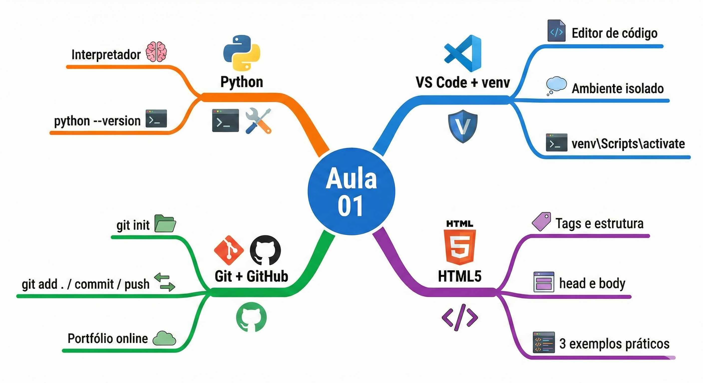
Na próxima aula, você vai instalar o Flask e ver pela primeira vez o Python respondendo requisições do navegador. O index.html que você criou hoje vai evoluir para um template dinâmico gerado pelo back-end — e essa será a primeira vez que você verá as três camadas da aplicação web trabalhando juntas.
Referências e Leitura Complementar¶
O MDN Web Docs em developer.mozilla.org é a referência oficial para HTML, CSS e JavaScript — gratuito, excelente e com boa cobertura em português. Para Git, o livro Pro Git está disponível gratuitamente em git-scm.com/book/pt-br e cobre desde o básico até usos avançados, também em português.
🏆 Conquista da Aula¶
Selo desbloqueado: 🧭 Explorador(a) da Web
Você configurou seu primeiro ambiente de desenvolvimento completo, fez seu primeiro commit no Git e escreveu suas primeiras páginas HTML5 válidas. Na próxima aula, o index.html que você criou vai ganhar vida: o Flask vai gerar essa página dinamicamente, e você vai ver o back-end e o front-end conversando pela primeira vez.
🔗 Navegação¶
➡️ Próxima Aula: Flask e Bootstrap
Fatec Jahu · ILP951 · Prof. Ronan Adriel Zenatti · 2026